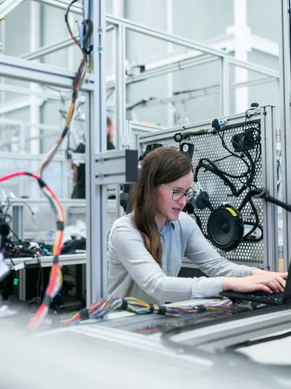
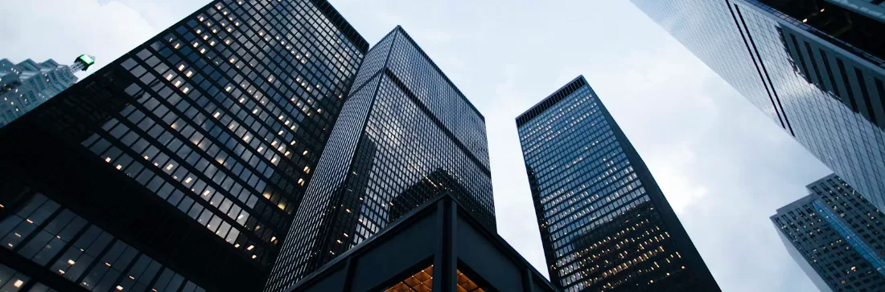
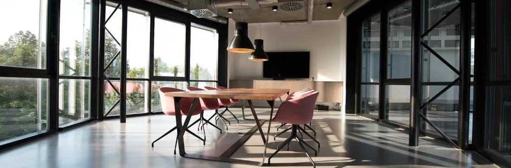

About Stackly
A product company built for the long middle — the unglamorous stretch where most of the real work happens.
We started Stackly because the tools we were using made the work harder than it needed to be. We're building the alternative we wanted: calm, clear, and close to how teams actually think.

The Reason We Started
We didn't set out to start a company. We set out to fix something small.
The first version was a spreadsheet. It held the plan, the reasoning, and the open questions all in one place — and for a while, that was enough. What we noticed was that the tool wasn't the interesting part. The clarity was.
Teams we showed it to asked for the same thing again and again: something that held context next to the work, without turning every decision into ceremony. That request became Stackly.
We are still early, and we build in the open. But the shape of what we're making hasn't changed: a calm surface that keeps the work honest and unencumbered.
— The Stackly team

A snapshot of the working rhythm we wanted the product to keep.
Our Point of View
Beliefs about building useful products.
We have a few convictions that guide what we take on, how we write code, and what we choose to leave out.
Clarity over cleverness
If it needs explaining, it isn't finished. The best interface is one you stop noticing.
Evidence over opinion
We test, watch, and adjust. Taste is a starting point, not the final say.
Craft without ceremony
We care about the small details and refuse to make a show of caring about them.


The People Behind the Work
A small team close to the problem.



Working together in tight feedback loops across engineering, product, and design.
What We Value
Principles expressed through daily decisions.


Clarity
If it needs explaining, it isn't finished. We measure our work by how little training is needed to make sense of it.
Evidence
We test, observe, and adapt. Instinct is where we begin, but live evidence always guides the next release.
Craft
We obsess over tactile details, consistent keystrokes, and predictable performance.
Honesty
We are open about what works, what needs polish, and where the product is headed next.
How We Build
A sequence designed for steady momentum.
We work in short, disciplined loops: clarify the core question, prototype immediately, validate with real workflows, and build to endure.

1. Name the constraint
Identify the single friction point that prevents a team from moving fast.

2. Prototype the answer
Create functional UI quickly so assumptions can be tested before large code commitments.
3. Engineer the foundation
Write clean, accessible, semantic code that maintains speed and predictability.

4. Iterate in the open
Deploy early, gather direct user signals, and refine the interface continuously.
No artificial handoffs. Designers write CSS, engineers shape UX, and everyone talks to customers.

Working Standard
Every feature must justify its weight before it enters the product.
Decisions With Purpose
How we approach quality and trade-offs.
We choose speed over decoration
Fast interactions make tools feel weightless. We prefer swift response times to gratuitous motion effects.
We choose density when it helps
Experienced operators want high signal density. We give power users clarity without unnecessary scroll fatigue.
We say no to feature clutter
A tool that tries to do everything ends up doing nothing well. We protect the simplicity of our core workflows.
Where We're Going
Our trajectory and upcoming horizons.
We are committed to building sustainably, growing our core capabilities steadily without compromising on stability.

Deeper integrations
Connecting smoothly into everyday developer tools and project management environments.
Enhanced team collaboration
Synchronous presence and clear asynchronous discussion streams without clutter.
Extensible modular platform
Empowering teams to tailor workflows to their specific development and design practices.
The Stackly Difference
Grounded differentiation, not empty claims.
We believe software should feel like a reliable precision instrument rather than a noisy attention trap.
Context right where you work
Decisions, specs, and questions sit alongside active tasks so nothing gets lost in separate chat silos.
Zero artificial complexity
No complex setup wizards or unneeded configuration steps before you can do meaningful work.
Respect for focus
Thoughtful notifications that respect quiet hours and protect deep concentration.

Built to serve the people doing the work, day in and day out.
Start Here
Ready to see how Stackly simplifies your product work?
Explore our service offerings or start a direct conversation with our team to find the right fit for your roadmap.